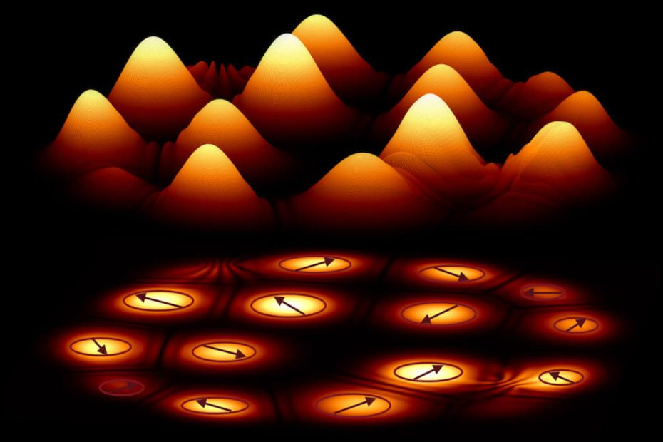

Quasi အမှုန်တွေဟာ ကွမ်တမ်မက္ကင်းနစ်လောကရဲ့ ထူးဆန်းအံ့ဖွယ် အရာတခု ဖြစ်ပါတယ်။ ဒီ အမှုန်တွေဟာ အီလက်ထရွန် သို့မဟုတ် ပရိုတွန်ကဲ့သို့သော တကယ့်အမှုန်တွေ မဟုတ်ကြပါဘူး။ ဒါပေမယ့် ကွာဇီအမှုန် တွေဟာ ဒီ အီလက်ထရွန်၊ ပရိုတွန် တွေလို အမှုန်တွေကဲ့သို့ ပြုမူကြပါတယ်။
ပထမဆုံး quasiparticles တွေဟာ ဘာလဲ မပြောခင် အမှုန်ဆိုတာ ဘာလဲ ဆိုတာကို ဦးစွာ နားလည် ရန် လိုအပ်ပါတယ်။
အရင်ဆုံး အမှုန် ဆိုတာကို ကြည့်လိုက်ရအောင်။ အမှုန်တွေမှာ တိကျစွာသတ်မှတ်ထားတဲ့ အနေအထား (position) နှင့် အရှိန်အဟုန်ရှိ (momentum) ရှိကြပါတယ်။ ဒီတော့ အရာဝတ္ထုများ ရွေ့လျားပုံနှင့် တစ်ခုနှင့်တစ်ခု အပြန်အလှန် တုံ့ပြန်ပုံကို လေ့လာတဲ့ classical mechanics ရူပဗေဒ ဖော်မြူလာ တွေကို အသုံးပြုပြီး အမှုန် တစ်ခုကို လေ့လာ နိုင့်ပါတယ်။
ဒါပေမယ့် ဒီ နည်းက ကွမ်တမ်မက္ကင်းနစ်လောကက အမှုန်တွေ အတွက်တော့ အသုံးမဝင်ပါဘူ။ ဘာ့ကြောင့်ဆိုတော့ ကွမ်တမ်အမှုန် တစ်ခုဟာ အခြေအနေ မျိုးစုံမှာ တစ်ပြိုင်နက်တည်း တည်ရှိနိုင်ပြီး ကွမ်တမ် အမှုန် တစ်ခုရဲ့ အနေအထားနှင့် အရှိန်အဟုန်ကိုလဲ တစ်ချိန်တည်းမှာ အတိအကျ မသိနိုင်ပါဘူး။
အဲ့သည်အစား ဒီ အမှုန် တစ်ခုကို အခြေအနေတစ်ခုမှာ ရှာဖွေရန် ဖြစ်နိုင်ခြေကို တွက်ချက်ပေးသည့် လှိုင်းလုပ်ဆောင်ချက် (wave function) နဲ့ပဲ ဖော်ပြလို့ ရပါတယ်။ (ဆိုလိုတာ ကတော့ အမှုန်တစ်ခုရဲ့ တည်နေရာ နဲ့ အဟုန်ကို အတိအကျ မသိနိုင်ဘူး၊ သူတို့ ဒီနေရာ မှာ ဒီ အဟုန်နဲ့ ရှာတွေ့နိုင်ဖို့ ဘယ်လောက် ဖြစ်နိုင်ခြေ ရှိလဲ ဆိုတဲ့ probability ကိုပဲ သိနိုင်မယ်။ ပြောရရင် တွေ့မယ် မတွေ့ဘူးက ကံပဲပေါ့။)
အခု၊ ကွာဇီ အမှုန်တွေဆီ ဆက်သွားရအောင်။ Quasiparticles တွေဟာ တကယ့်အမှုန်များမဟုတ်ပါဘူး။ ဘာလို့ဆိုတော့ ဒီ အမှုန်တွေဟာ ဒြပ်ဝတ္ထုတွေကို ဖွဲ့စည်းတည်ဆောက်ထားတဲ့ အခြေခံ အမှုန်တွေ မဟုတ်ကြပါဘူး။ ဒီ အမှုန်တွေဟာ ဒြပ်ဝတ္ထု တစ်ခုခု အတွင်းမှာ ဖြစ်ပေါ်တဲ့ လှိုင်းဂယက်များ ဖြစ်ကြပါတယ်။ (ကွမ်တမ်သဘောအရ လှိုင်းနဲ့ အမှုန်ဟာ အတူတူပဲ ဖြစ်ပါတယ်)။ ဒြပ်ပစ္စည်းတွေ အတွင်းကို စွမ်းအင်ထည့်သွင်း ပေးခြင်းအားဖြင့် ဒီလှိုင်းတွေကို ဖန်တီးနိုင်ပါတယ်။
ကွာဇီအမှုန် ကို ဥပမာ ပြရရင် phonon အမှုန်ပဲ ဖြစ်ပါတယ်။ ဒီ ဖိုနွန် ဟာ ဒြပ်ဝတ္ထု တစ်ခုရဲ့ အတွင်းက အက်တမ်တွေနဲ့ မော်လီကျူးတွေ ချိတ်ဆက်ပြီး ရာဇမတ်ကွက်ပုံ ဖွဲ့စည်းပုံ ထဲမှာ လှိုင်းတွေ အနေနဲ့ ဖြတ်သန်း သွားပါတယ်။ ဒီလို လှိုင်းအနေနဲ့ ဖြတ်သန်း သွားတဲ နေရာမှာ Phonon တွေဟာ အမှုန် ကဲ့သို့ ပြုမူကြတယ်လို့ ကွမ်တမ် ရူပဗေဒက ရှင်းပြပါတယ်။ ဒီ ဖိုနွန် ဆိုတာက တကယ်တော့ ဒြပ်ပစ္စည်းများထဲမှာ အပူနှင့် အသံများ သယ်ဆောင် ဖြတ်သန်းတဲ့ အလုပ်ကို လုပ်ပေးတဲ့ အမှုန်တွေပဲ ဖြစ်ပါတယ်။
Quasiparticles တွေဟာ ရူပဗေဒနယ်ပယ်များစွာတွင် အသုံးဝင်ပါတယ်။ အထူးသဖြင့် ဒြပ်ဝတ္ထု အများအပြား သိပ်သိပ်သည်းသည်း ဖိသိပ် ထားချိန်မှာ ဘယ်လို ပြုမူသလဲ ဆိုတာ လေ့လာတဲ့ နေရာမှာ အသုံးဝင်ပါတယ်။ ကွာဇီ အမှုန်တွေ မည်ကဲ့သို့ ပြုမူသည်ကို နားလည်ခြင်းဖြင့် ရူပဗေဒပညာရှင်များသည် ပစ္စည်းများ၏ ဂုဏ်သတ္တိများကို ထိုးထွင်းသိမြင်နိုင်ပြီး နည်းပညာအသစ်များကို တီထွင်နိုင်မှာ ဖြစ်ပါတယ်။
နိဂုံးချုပ်အားဖြင့်၊ ကွာဇီ အမှုန်များသည် တကယ့်အမှုန်များမဟုတ်သော်လည်း အမှုန်များကဲ့သို့ ပြုမူနေသည့် လှိုင်းများ ဖြစ်ပါတယ်။ ဒီလှိုင်းတွေဟာ ဒြပ်ဝတ္ထု တွေအတွင်းကို စွမ်းအင် ဝင်ရောက်လာတဲ့ အခါ ဖြစ်ပေါ်လာတဲ့ လှိုင်းတွေ ဖြစ်ကြပါတယ်။ ဒီ လှိုင်း/အမှုန် တွေကို လေ့လာခြင်း အားဖြင့် ဒြပ်ပစ္စည်းများ၏ ဂုဏ်သတ္တိများကို နားလည်ရန်နှင့် နည်းပညာအသစ်များ တီထွင်ရန်အတွက် အသုံးဝင် ပါတယ်။ ကွာဇီ အမှုန်တွေဟာ ထူးဆန်းသည်ဟု ထင်ရသော်လည်း ကွမ်တမ်ကမ္ဘာကို ကျွန်ုပ်တို့နားလည်ဖို့ လိုအပ်တဲ့ မရှိမဖြစ်အစိတ်အပိုင်းတစ်ခုဖြစ်ပါတယ်။
ကွမ်တမ်မိတ်ဆက် – ကွာဇီအမှုန်ဆိုတာ ဘာလဲ

May 12, 2023
Other Posts
- မိုင်းထိသွားတဲ့ မြန်မာ့လေကြောင်းပိုင် ဒါကိုတာလေယာဉ်ကြီးကို ပြင်ဆင်ခဲ့စဉ်က
- မိုဘိုင်းဖုန်း signal တွေဟာ ဂြိုဟ်သားတွေကို ကမ္ဘာရှိရာ လမ်းညွှန်ပေးနေတယ်
- အာကာသ ရတနာတွင်းကြီးကို လေ့လာမယ့် နာဆာ
- နယူတန်ရဲ့ ဆွဲငင်အားနဲ့ အိုင်းစတိုင်းရဲ့ ဆွဲငင်အား ဘာကွာလဲ
- ဥက္ကာပျံ လမ်းလွှဲတဲ့ DART Mission ဘယ်လောက်အထိ အောင်မြင်သလဲ
- ကမ္ဘာ့ သံလိုက်စက်ကွင်း ပြောင်းပြန်ဖြစ်ခဲ့လျှင်
- သော့ပေါက်က လေဆာထိုးပြီး အခန်းတွင်းကို ထောက်လှမ်းနိုင်မယ့်နည်းပညာ
- အာကာသကို အလည်သွားမယ်
- မစ်ကီးဝေး ဗဟိုနားမှာ အရက်ပြန် ရှာတွေ့
- ဓါတ်ခွဲခန်းမွေး အသားကို စီးပွားဖြစ် ထုတ်လုပ်မယ့် အစ္စရေး